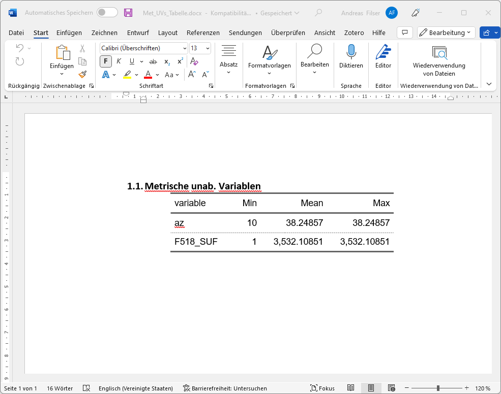
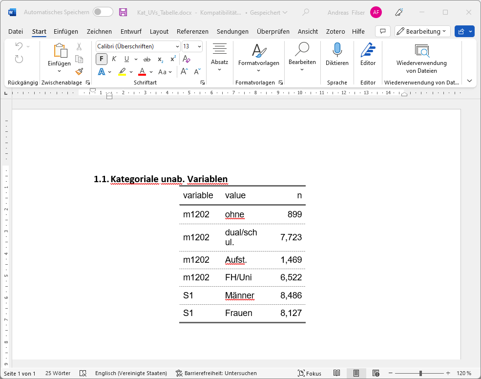
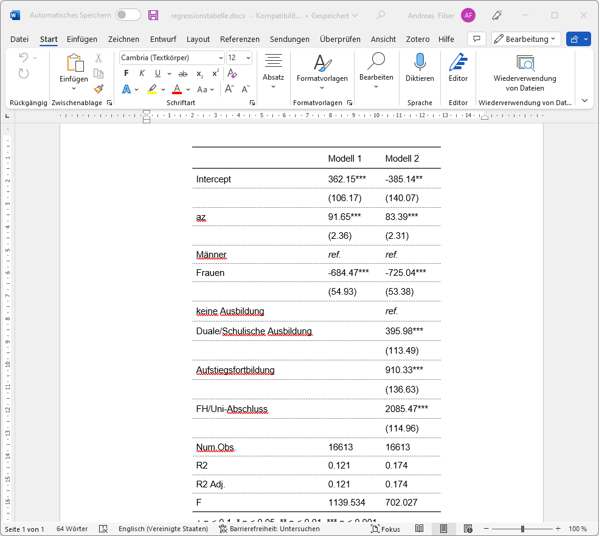
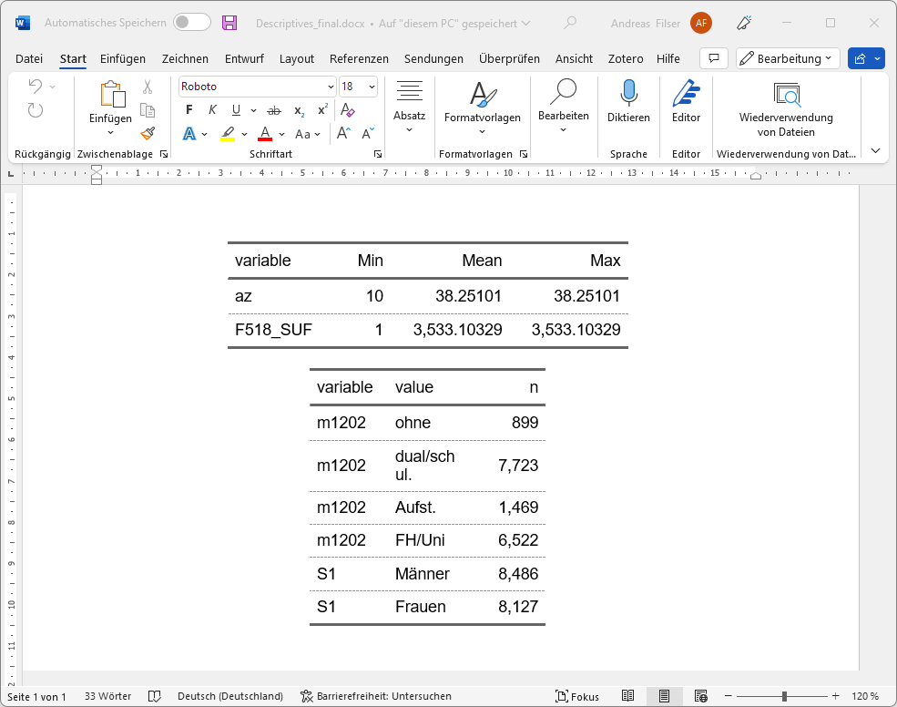

library(dplyr) # für die Datenvorbereitung
library(modelsummary) # Tabellen vorbereiten
library(skimr) # Tabellen vorbereiten
library(janitor) # kreuztabellen
library(flextable) # Formatierung der Tabelle für Word
library(officer) # eigentlicher Word-Export13 Tabellenexport
Eure Zeit ist zu wertvoll, um Tabellen per Hand zu erstellen!
Diese Pakete werden gebraucht, alle sind mit dem entsprechenden install.packages("") installierbar:
Zu diesen Variablen sollen folgende deskriptiven Übersichtstabellen erstellt und als Word-Dokument exportiert werden:
| var | . |
|---|---|
| az | Arbeitszeit aus der umfangreichsten Tätigkeit |
| S1 | Geschlecht |
| F518_SUF | Wie hoch ist Ihr monatlicher Bruttoverdienst aus Ihrer Tätigkeit? |
| m1202 | Höchster Ausbildungsabschluss |
Wir starten mit einem Ausschnitt der ETB 2018:
etb18_kap14 <- haven::read_dta("./data/BIBBBAuA_2018_suf1.0.dta",col_select = c("F518_SUF","az","S1","m1202")) %>%
mutate(across(matches("F518|m1202"),~ifelse(.x<0 | .x >= 99998, NA, .x))) %>%
na.omit() # alle Zeilen mit (mind.) 1 NA löschen13.1 {flextable}
Mit dem Paket {flextable} können wir data.frames als Tabelle in eine Word-Datei exportieren, {officer} erweiteret diese Funktionen speziell für den Export in Word:
install.packages("flextable")
library(flextable)
install.packages("officer")
library(officer)df1 <- data.frame(x1= c(2,2), y1 = c(0,1))
df1 x1 y1
1 2 0
2 2 1{flextable} stellt uns eine Reihe an Funktionen zur Formatierung zur Verfügung, um die Darstellung des data.frame zu anzupassen:
flextable(df1) %>%
border_remove() %>%
hline_top(border = fp_border(color = "orange")) %>%
hline(i=1,border = fp_border(color = "blue",style = "dotted")) %>%
set_header_labels(x1 = "Anderes Label") %>%
add_header_row(values = c("Überschrift",""),colwidths = c(1,1)) %>%
autofit()Überschrift | |
Anderes Label | y1 |
2 | 0 |
2 | 1 |
Hier finden sich weitere Infos zu flextable, u.a. können bspw. die Trennlinien dünner gemacht werden oder eine andere Farbe angegeben werden. Hier finden sich alle vefügbaren Funktionen.
13.2 Deskription
13.2.1 Verteilungstabellen für metrische Variablen
Für die metrischen Merkmale kennen wir ja das summary():
summary(etb18_kap14$F518_SUF) Min. 1st Qu. Median Mean 3rd Qu. Max.
1 2000 3000 3533 4200 72000 summary(etb18_kap14$az) Min. 1st Qu. Median Mean 3rd Qu. Max.
10.00 32.00 40.00 38.25 45.00 120.00 Eine einfach Möglichkeit, diese summary() untereinander anzuordnen, ist summarise in Kombination mit pivot_longer() zu verwenden:
etb18_kap14 %>%
select(az,F518_SUF) %>%
pivot_longer(cols = everything(), names_to = "variable") %>%
group_by(variable) %>%
summarise(min = min(value,na.rm = T),
mean = mean(value,na.rm = T),
max = mean(value,na.rm = T))# A tibble: 2 × 4
variable min mean max
<chr> <dbl> <dbl> <dbl>
1 az 10 38.3 38.3
2 F518_SUF 1 3533. 3533. etb18_kap14 %>%
select(az,F518_SUF) %>%
pivot_longer(cols = everything(), names_to = "variable") %>%
group_by(variable) %>%
summarise(Min = min(value,na.rm = T),
Mean = mean(value,na.rm = T),
Max = mean(value,na.rm = T)) %>%
flextable()variable | Min | Mean | Max |
az | 10 | 38.25101 | 38.25101 |
F518_SUF | 1 | 3,533.10329 | 3,533.10329 |
met_ft <-
etb18_kap14 %>%
select(az,F518_SUF) %>%
pivot_longer(cols = everything(), names_to = "variable") %>%
group_by(variable) %>%
summarise(Min = min(value,na.rm = T),
Mean = mean(value,na.rm = T),
Max = mean(value,na.rm = T)) %>%
flextable() %>%
autofit()Der eigentliche Export ist dann mit save_as_docx, wo wir eine Überschrift und mit path die Zieldatei angeben können:
save_as_docx("Metrische unab. Variablen" = met_ft, path = "./results/Met_UVs_Tabelle.docx")
13.2.2 Häufigkeitsauszählungen
etb18_kap14 %>%
select(S1,m1202) %>%
mutate(S1 = factor(S1,levels = 1:2, labels = c("Männer","Frauen")),
m1202 = factor(m1202, levels = 1:4,labels = c("ohne","dual/schul.","Aufst.","FH/Uni"))) %>%
pivot_longer(everything(),names_to = "variable") %>%
count(variable,value)# A tibble: 6 × 3
variable value n
<chr> <fct> <int>
1 m1202 ohne 899
2 m1202 dual/schul. 7723
3 m1202 Aufst. 1469
4 m1202 FH/Uni 6522
5 S1 Männer 8486
6 S1 Frauen 8127etb18_kap14 %>%
select(S1,m1202) %>%
mutate(S1 = factor(S1,levels = 1:2, labels = c("Männer","Frauen")),
m1202 = factor(m1202, levels = 1:4,labels = c("ohne","dual/schul.","Aufst.","FH/Uni"))) %>%
pivot_longer(everything(),names_to = "variable") %>%
count(variable,value) %>%
flextable()variable | value | n |
m1202 | ohne | 899 |
m1202 | dual/schul. | 7,723 |
m1202 | Aufst. | 1,469 |
m1202 | FH/Uni | 6,522 |
S1 | Männer | 8,486 |
S1 | Frauen | 8,127 |
kat_ft <-
etb18_kap14 %>%
select(S1,m1202) %>%
mutate(S1 = factor(S1,levels = 1:2, labels = c("Männer","Frauen")),
m1202 = factor(m1202, levels = 1:4,labels = c("ohne","dual/schul.","Aufst.","FH/Uni"))) %>%
pivot_longer(everything(),names_to = "variable") %>%
count(variable,value) %>%
flextable()Für den Export können wir dann wieder save_as_docx() verwenden:
save_as_docx("Kategoriale unab. Variablen" = kat_ft, path = "./results/Kat_UVs_Tabelle.docx")
13.2.3 Übung
13.3 Regressionstabellen
Für Regressionstabellen können wir mit {modelsummary} eine {flextable}-Tabelle erstellen:
etb18_kap14_reg_df <-
etb18_kap14 %>%
mutate(S1 = factor(S1,levels = 1:2, labels = c("Männer","Frauen")),
m1202 = factor(m1202, levels = 1:4,labels = c("ohne","dual/schul.","Aufst.","FH/Uni")))
m1 <- lm(F518_SUF ~ az + S1, data = etb18_kap14_reg_df)
m2 <- lm(F518_SUF ~ az + S1 + m1202, data = etb18_kap14_reg_df)
modelsummary(list("Modell 1"=m1,"Modell 2"=m2),
output = "flextable",gof_omit = "IC|Log|RMS",
coef_rename = c("(Intercept)"="Intercept",
"S1Frauen" = "Frauen",
"m1202dual/schul." = "Duale/Schulische Ausbildung",
"m1202Aufst." = "Aufstiegsfortbildung",
"m1202FH/Uni" = "FH/Uni-Abschluss"),
stars = T,fmt =2)
| Modell 1 | Modell 2 |
Intercept | 362.15*** | -385.14** |
(106.17) | (140.07) | |
az | 91.65*** | 83.39*** |
(2.36) | (2.31) | |
Frauen | -684.47*** | -725.04*** |
(54.93) | (53.38) | |
Duale/Schulische Ausbildung | 395.98*** | |
(113.49) | ||
Aufstiegsfortbildung | 910.33*** | |
(136.63) | ||
FH/Uni-Abschluss | 2085.47*** | |
(114.96) | ||
Num.Obs. | 16613 | 16613 |
R2 | 0.121 | 0.174 |
R2 Adj. | 0.121 | 0.174 |
F | 1139.534 | 702.027 |
+ p < 0.1, * p < 0.05, ** p < 0.01, *** p < 0.001 | ||
13.3.1 Referenzkategorien einfügen
Um die Referenzkategorie für kategoriale Variablen kenntlich zu machen, können wir den Hinweis ref. mitaufanzeigen.
Dazu können wir mit Hilfe des Arguments add_rows eine zusätzliche Zeile für die Referenzkategorie der Variable S1 einfügen. Zunächst erstellen wir einen data.frame, welcher neben den Modellnamen die Koeffizientennamen sowie die einzufügenden Werte enthält. Mit tribble aus dem Paket tibble lässt sich das einfach bewerkstelligen: wir können die Zeilen und Spalten gleich so aufschreiben, wie wir sie haben möchten:
library(tibble)
ref_rows <- tribble( ~ term, ~ "Modell 1", ~ "Modell 2",
"Männer", 'ref.', 'ref.')
attr(ref_rows, 'position') <- 5 # Zeile angeben
modelsummary(
list("Modell 1" = m1, "Modell 2" = m2),
output = "flextable",
gof_omit = "IC|Log|RMS",
coef_rename = c(
"(Intercept)" = "Intercept",
"S1Frauen" = "Frauen",
"m1202dual/schul." = "Duale/Schulische Ausbildung",
"m1202Aufst." = "Aufstiegsfortbildung",
"m1202FH/Uni" = "FH/Uni-Abschluss"
),
add_rows = ref_rows,
stars = T,
fmt = 2
)
| Modell 1 | Modell 2 |
Intercept | 362.15*** | -385.14** |
(106.17) | (140.07) | |
az | 91.65*** | 83.39*** |
(2.36) | (2.31) | |
Männer | ref. | ref. |
Frauen | -684.47*** | -725.04*** |
(54.93) | (53.38) | |
Duale/Schulische Ausbildung | 395.98*** | |
(113.49) | ||
Aufstiegsfortbildung | 910.33*** | |
(136.63) | ||
FH/Uni-Abschluss | 2085.47*** | |
(114.96) | ||
Num.Obs. | 16613 | 16613 |
R2 | 0.121 | 0.174 |
R2 Adj. | 0.121 | 0.174 |
F | 1139.534 | 702.027 |
+ p < 0.1, * p < 0.05, ** p < 0.01, *** p < 0.001 | ||
Das funktioniert auch für mehrere Referenzkategorien:
ref_rows2 <- tribble(~term, ~"Modell 1", ~"Modell 2",
"Männer", 'ref.', 'ref.',
"keine Ausbildung", '', 'ref.',
)
attr(ref_rows2, 'position') <- c(5,8) # Zeile angeben
modelsummary(
list("Modell 1" = m1, "Modell 2" = m2),
output = "flextable",
gof_omit = "IC|Log|RMS",
coef_rename = c(
"(Intercept)" = "Intercept",
"S1Frauen" = "Frauen",
"m1202dual/schul." = "Duale/Schulische Ausbildung",
"m1202Aufst." = "Aufstiegsfortbildung",
"m1202FH/Uni" = "FH/Uni-Abschluss"
),
add_rows = ref_rows2,
stars = T,
fmt = 2
)
| Modell 1 | Modell 2 |
Intercept | 362.15*** | -385.14** |
(106.17) | (140.07) | |
az | 91.65*** | 83.39*** |
(2.36) | (2.31) | |
Männer | ref. | ref. |
Frauen | -684.47*** | -725.04*** |
(54.93) | (53.38) | |
keine Ausbildung | ref. | |
Duale/Schulische Ausbildung | 395.98*** | |
(113.49) | ||
Aufstiegsfortbildung | 910.33*** | |
(136.63) | ||
FH/Uni-Abschluss | 2085.47*** | |
(114.96) | ||
Num.Obs. | 16613 | 16613 |
R2 | 0.121 | 0.174 |
R2 Adj. | 0.121 | 0.174 |
F | 1139.534 | 702.027 |
+ p < 0.1, * p < 0.05, ** p < 0.01, *** p < 0.001 | ||
Auf den mit {modelsummary} erstellten flextable können wir natürlich auch alle Funktionen für flextable anwenden und dann mit save_as_docx() die Tabelle exportieren:
regtab2 <-
modelsummary(
list("Modell 1" = m1, "Modell 2" = m2),
output = "flextable",
gof_omit = "IC|Log|RMS",
coef_rename = c(
"(Intercept)" = "Intercept",
"S1Frauen" = "Frauen",
"m1202dual/schul." = "Duale/Schulische Ausbildung",
"m1202Aufst." = "Aufstiegsfortbildung",
"m1202FH/Uni" = "FH/Uni-Abschluss"
),
add_rows = ref_rows2,
stars = T,
fmt = 2) %>%
autofit() %>%
italic(i = ~ `Modell 2` == "ref.",j =2:3)save_as_docx(regtab2,path = "./results/regressionstabelle.docx")
13.4 Alle Tabellen in eine Datei mit {officer}
Um die Tabellen in Dokument gemeinsames Dokument zu exportieren, ist das Paket officer eine große Hilfe. Mehr Infos hier.
library(officer)Zunnächst lesen wir mit read_docx() eine Vorlage ein, welche Einstellungen für das Word-Dokument enthält (Seitenformat,..) und fügen dann mit body_add_flextable() die Tabellen ein. Mit body_add_par(.,"") können wir leere Absätze einfügen.
read_docx("pfad/zur/Vorlage/DIN_A4_Vorlage.docx") %>%
body_add_flextable(., value = met_ft ) %>% # flextable met_ft einfügen
body_add_par(.,"") %>% # leeren Absatz einfügen
body_add_flextable(., value = kat_ft ) %>% # flextable cat_ft einfügen
print(target = "./results/Descriptives_final.docx")
13.5 Übung
13.5.1 Übung
etb_ue14 <-
haven::read_dta("./data/BIBBBAuA_2018_suf1.0.dta",col_select = c("gkpol","az","zpalter","m1202"))%>%
filter(zpalter < 100, m1202 > 0) %>%
mutate(gkpol = factor(gkpol,levels = 1:7, labels = c("<2k", "2k bis <5k", "5k bis <20k", "20k bis <50k", "50k bis <100k",
"100k bis <500k", "500k und mehr")),
m1202 = factor(m1202, levels = 1:4,labels = c("ohne","dual/schul.","Aufst.","FH/Uni"))) - Erstellen Sie eine Übersicht für die Variablen
zpalter(Alter) undaz(Arbeitszeit) und exportieren Sie diese in eine Word-Datei. Verwenden Sie den obigen Einlesebefehl - dann sind die Missings bereits ausgeschlossen,- Erstellen Sie zunächst einen
data.framemit min, mean und max der beiden Variablen. - Formatieren Sie diesen
data.framedann alsflextable - Speichern Sie diesen mit
save_as_docx()
- Erstellen Sie zunächst einen
- Erstellen Sie eine Übersichtstabelle zu
gkpol(Größe der Wohngemeinde) undm1202(Ausbildung).- Die Labels sind bereits im obigen Einlesebefehl gesetzt.
13.5.2 Übung
- Erstellen sie folgende Regressionsmodelle und erstellen Sie mit
{modelsummary}eine Regressiontabelle:
m1 <- lm(az ~ m1202 , etb_ue14)
m2 <- lm(az ~ m1202 + zpalter, etb_ue14)13.6 Anhang
13.6.1 Kreuztabellen
Geschlecht | |||
Ausbildung | Männer | Frauen | Total |
ohne | 500 | 399 | 899 |
dual/schul. | 3,716 | 4,007 | 7,723 |
Aufst. | 912 | 557 | 1,469 |
FH/Uni | 3,358 | 3,164 | 6,522 |
Total | 8,486 | 8,127 | 16,613 |
Hier ist die Herausforderung, einen data.frame() für {flextable} vorzubereiten: xtabs() gibt keinen data.frame aus und meistens ist der long shape Output von count() auch nicht das was wir wollen:
tab1 <- xtabs(~S1+m1202,etb18_kap14)
class(tab1)[1] "xtabs" "table"etb18_kap14 %>%
mutate(S1 = factor(S1,levels = 1:2, labels = c("Männer","Frauen"))) %>% # zahlenwerte in S1 mit labels überschreiben
mutate(m1202 = factor(m1202, levels = 1:4,labels = c("ohne","dual/schul.","Aufst.","FH/Uni"))) %>% # auch für m1202
count(S1,m1202) %>%
flextable()S1 | m1202 | n |
Männer | ohne | 500 |
Männer | dual/schul. | 3,716 |
Männer | Aufst. | 912 |
Männer | FH/Uni | 3,358 |
Frauen | ohne | 399 |
Frauen | dual/schul. | 4,007 |
Frauen | Aufst. | 557 |
Frauen | FH/Uni | 3,164 |
tabyl() aus {janitor} hilft hier weiter:
library(janitor)
etb18_kap14 %>%
mutate(S1 = factor(S1,levels = 1:2, labels = c("Männer","Frauen"))) %>% # zahlenwerte in S1 mit labels überschreiben
mutate(m1202 = factor(m1202, levels = 1:4,labels = c("ohne","dual/schul.","Aufst.","FH/Uni"))) %>% # auch für m1202
tabyl(m1202,S1) %>%
adorn_totals(where = c("row","col")) m1202 Männer Frauen Total
ohne 500 399 899
dual/schul. 3716 4007 7723
Aufst. 912 557 1469
FH/Uni 3358 3164 6522
Total 8486 8127 16613
Tip
Übrigens: Mit adorn_percentages() können wir bspw. statt absoluten Häufigkeiten die prozentualen Anteile ausgeben lassen. Weitere adorn_...() Funktionen in der Vignette.
etb18_kap14 %>%
mutate(S1 = factor(S1,levels = 1:2, labels = c("Männer","Frauen"))) %>% # zahlenwerte in S1 mit labels überschreiben
mutate(m1202 = factor(m1202, levels = 1:4,labels = c("ohne","dual/schul.","Aufst.","FH/Uni"))) %>% # auch für m1202
tabyl(m1202,S1) %>%
adorn_totals(where = c("row","col")) %>%
flextable() %>%
border_remove() %>% # linien raus
hline(i=4) %>% # in zeile 4 eine Linie einfügen
hline_top() %>% # linie oben
set_header_labels(m1202 = "Ausbildung") %>% # kopf-label links
add_header_row(values = c("","Geschlecht",""),colwidths = c(1,2,1)) # label obenGeschlecht | |||
Ausbildung | Männer | Frauen | Total |
ohne | 500 | 399 | 899 |
dual/schul. | 3,716 | 4,007 | 7,723 |
Aufst. | 912 | 557 | 1,469 |
FH/Uni | 3,358 | 3,164 | 6,522 |
Total | 8,486 | 8,127 | 16,613 |
cross_tab <-
etb18_kap14 %>%
mutate(S1 = factor(S1,levels = 1:2, labels = c("Männer","Frauen"))) %>% # zahlenwerte in S1 mit labels überschreiben
mutate(m1202 = factor(m1202, levels = 1:4,labels = c("ohne","dual/schul.","Aufst.","FH/Uni"))) %>% # auch für m1202
tabyl(m1202,S1) %>%
adorn_totals(where = c("row","col")) %>%
flextable() %>%
border_remove() %>% # linien raus
hline(i=4) %>% # in zeile 4 eine Linie einfügen
hline_top() %>% # linie oben
set_header_labels(m1202 = "Ausbildung") %>% # kopf-label links
add_header_row(values = c("","Geschlecht",""),colwidths = c(1,2,1)) # label obensave_as_docx("Kreuztabelle" = cross_tab, path = "./results/Kreuztabelle.docx")13.6.2 Layout-Tipps für Tabellen
Hier finden sich einige Hinweise von Claus Wilke für ein gelungenes Tabellen-Layout:
- Do not use vertical lines.
- Do not use horizontal lines between data rows. Horizontal lines as separator between the title row and the first data row or as frame for the entire table are fine.
- Text columns should be left aligned.
- Number columns should be right aligned and should use the same number of decimal digits throughout.
- Columns containing single characters are centered.
- The header fields are aligned with their data, i.e., the heading for a text column will be left aligned and the heading for a number column will be right aligned.
13.6.3 weitere Pakete
Neben {flextable} gibt es noch eine ganze Reihe an weiteren Paketen - allerdings sind zielen diese vor allem auf pdf und HTML-Formate. Hier findet sich eine gelungene Übersicht. Hier eine Übersicht mit meiner persönlichen Einschätzung:
Code
# create table-table with gt
pkg_tabl <-
list(
printer = c("gt", "flextable", "kableExtra"),
output = c("HTML", "PDF", "Word")
) %>%
purrr::cross_df() %>%
dplyr::mutate(
rating = dplyr::case_when(
printer == "gt" & output == "HTML" ~ 1, # good output
printer == "gt" & output %in% c("Word") ~ 5, # under construction
printer == "gt" & output %in% c("PDF") ~ 3, # under construction
printer == "flextable" & output == "Word" ~ 1, # bester
printer == "flextable" & output %in% c("HTML","PDF") ~ 2, # okay
printer == "kableExtra" & output %in% c("PDF", "HTML") ~ 1, # good output
printer == "kableExtra" & output %in% c("Word") ~ 4, # not supported
) %>%
factor()
) %>%
tidyr::pivot_wider(id_cols = printer, names_from = output, values_from = rating) %>%
dplyr::mutate(
link = dplyr::case_when(
printer == "gt" ~
"[gt](https://gt.rstudio.com/index.html)",
printer == "kable" ~
"[kable](https://bookdown.org/yihui/rmarkdown-cookbook/kable.html)",
printer == "flextable" ~
"[flextable](https://davidgohel.github.io/flextable/articles/overview.html)",
printer == "kableExtra" ~
"[kableExtra](http://haozhu233.github.io/kableExtra/)",
printer == "huxtable" ~
"[huxtable](https://hughjonesd.github.io/huxtable/)",
printer == "tibble" ~
"[tibble](https://tibble.tidyverse.org/)"
)
) %>%
gt() %>%
cols_move_to_start(columns = c(link)) %>%
cols_hide(columns = c(printer)) %>%
cols_label(link = md("**Paket**"),
HTML = md("**HTML**"), PDF = md("**PDF**"),
Word = md("**Word**")) %>%
fmt_markdown(columns = c(link)) %>%
fmt_markdown(columns = everything()) %>%
data_color(
columns = c(HTML, PDF, Word),
colors = scales::col_factor(
palette = c("#bae1ff", "#ffb3ba", "#ffdfba", "#ffffba", "#baffc9"),
domain = NULL,
reverse = TRUE
),
alpha = 0.8
) %>%
cols_width(c(HTML, PDF, Word) ~ px(60),
c(link) ~ px(110),
c(link) ~ px(140))
# Emoji library: https://gist.github.com/rxaviers/7360908
pkg_tabl %>%
text_transform(
locations = cells_body(columns = c(HTML, PDF, Word)),
fn = function(x) {
dplyr::case_when(
x == 1 ~ as.character(emo::ji("star")),
x == 2 ~ as.character(emo::ji("heavy_check_mark")),
x == 3 ~ as.character(emo::ji("grey_question")),
x == 4 ~ as.character(emo::ji("o2")),
x == 5 ~ as.character(emo::ji("wrench")),
TRUE ~ as.character(emo::ji("o2"))
)
}
)| Paket | HTML | Word | |
|---|---|---|---|
| ⭐ | ❔ | 🔧 | |
| ✔️ | ✔️ | ⭐ | |
| ⭐ | ⭐ | 🅾️ |
{kableExtra}- mein Favorit für Tabellen in html und pdf Outputs.{gt}Großes Projekt mit sehr vielen Möglichkeiten, Tabellen auch interaktiv zu gestalten - daher vor allem für HTML-Outputs geeignet.{gtsummary}-{gt}speziell für Deskriptionen eines Treatment/Control Vergleich, hier eine aktuelle Einführung
Oh my goodness, oh my goodness, oh my goodness!🎆
— Daniel Sjoberg (@statistishdan) August 26, 2022
{gt}📦v0.7.0 is on CRAN and includes support for WORD OUTPUT---WORD! 🕺🪩🕺
Thank you @riannone & @ellis_hughes ❤️#RStats https://t.co/t2gKOfni1O pic.twitter.com/dxM5NwU09v
Weitere Tabellenpakete: